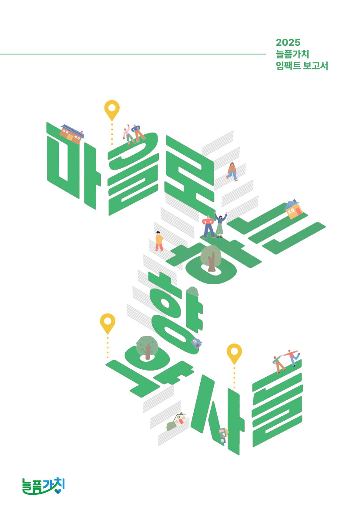

박희선(FIKA) · 포트폴리오
현장의 목소리와 연구의 근거를,
현장의 목소리와 연구의 근거를,
조직의 판단에 필요한 이야기와 리포트로 엮습니다.
저는 시민사회 현장의 경험, 인터뷰, 연구 자료를 읽고 핵심 질문과 메시지를 찾아내는 콘텐츠 기획자입니다. 기존의 성과 언어만으로 설명하기 어려운 비영리의 활동과 사회문제 해결 방식을, 더 많은 사람이 이해하고 판단할 수 있는 보고서·기사·콘텐츠로 번역합니다.
저는 스스로를 ‘무중력 기록활동가’라고 부릅니다. 여러 현장을 옮겨 다니며 사라지기 쉬운 경험을 기록하고, 다른 사람이 이해하고 판단할 수 있는 언어로 옮깁니다.
01
대표 프로젝트
소셜임팩트뉴스 기획연재현장의 틈
7편 · 2026.05~
7편 · 2026.05~
연재 기획·집필
하나의 장면에서 비영리의 구조를 읽어내는 기록
현장 인터뷰와 관찰에서 출발해 이론과 제도의 질문으로 확장하고, 바깥의 시민도 읽을 수 있는 칼럼으로 옮겼습니다.
자세히 보기 →
임팩트 리포팅 · 늘픔가치
숫자만으로 닿지 않는 변화까지, 임팩트의 언어로 번역하다
매년 운영의 기록을 소식지로 쌓고, 2025년에는 데이터·지도·외부 시선·현장 인터뷰를 결합한 59쪽 임팩트 보고서를 총괄 집필했습니다. 활동의 크기를 자랑하기보다 약사의 전문성이 지역사회에 닿을 때 생기는 의미와 변화를 여러 관점에서 설명했습니다.
자세히 보기 →현장연구 공모전 · 시상식 · 기사현장지식
×좋은연구
×좋은연구
리포트·행사 기획
95편의 현장연구에서 시민사회의 다음 질문을 읽다
시민사회 현장에서 만들어진 연구를 모으고, 연구자와 활동가 바깥의 시민에게 함께 전한 기획입니다.
자세히 보기 →02
작업물 모음
| 구분 | 작업물 · 역할 | 어떤 작업인가 |
|---|---|---|
| 연재 기획·집필 | 「숫자가 되지 못한 장면들」, 「저는 틈새 활동가예요」, 「비영리의 자가검열」 외 소셜임팩트뉴스 [현장의 틈] · 단독 집필 |
하나의 장면에서 출발해 비영리의 구조와 제도의 질문으로 확장한 작업 |
| 조직 운영·임팩트 리포팅 | 「2025 늘픔가치 임팩트 보고서」(59쪽), 2022~2024 연말 소식지 사단법인 늘픔가치 · 콘텐츠 구성, 취재·인터뷰, 성과 측정과 해석, 본문 집필 |
설립 초기부터 쌓은 운영 기록을 데이터·현장 인터뷰·외부 시선과 결합해, 새로운 사회문제 해결 방식의 의미와 변화를 여러 관점에서 설명한 작업 |
| 연구보고서 | 「지역 내 협력기반을 통한 폐의약품 수거 활동의 함의」(2025) 사단법인 늘픔가치 · 프로젝트 총괄, 공동 집필(제1저자) |
선행연구가 거의 없는 주제에서 수거·분석 기준을 세우고 데이터를 해석한 작업 |
| 현장 기사 | 2026 현장지식×좋은연구 시상식, 「소진은 전투가 아니라 전장의 문제다」, 지리산포럼 2026 소셜임팩트뉴스 소임리포터 · 취재·집필 |
연구자의 발견과 현장의 의미를 시민의 언어로 옮긴 작업 |
| 에세이·인사이트 | 「직업란에 쓸 말이 없었다」, 「두 번째 자리에 선 사람들」, 「비영리 활동가가 AI 에이전트를 만든 이유」 브런치스토리 [비영리의 시선] · 단독 집필 |
개인의 경험에서 제도와 조직의 질문을 끌어낸 작업 |
03
소개와 경력
비영리 현장에서 사업을 기획하고 연구와 기록을 연결해 왔습니다. 칼럼니스트이자 소셜임팩트뉴스 소임리포터로 활동가의 일과 마음을 기록하며, 여러 현장에서 발견한 이야기를 다른 사람의 판단에 도움이 되는 언어로 남깁니다.
- 2026 ~ 현재소셜임팩트뉴스 소임리포터 · 기획연재 [현장의 틈] 집필, 컨퍼런스·포럼 현장 취재
- 2026 ~ 현재브런치스토리 칼럼니스트(@fika) · [비영리의 시선] [활동가의 서재] [일상 노크] 연재
- 2026현장지식×좋은연구 공모전·시상식 기획 운영, 수상작 기사 집필
- ~ 2025.12사단법인 늘픔가치 전 사무국장, 현 비상임이사 · 사무국 운영, 연말 소식지와 2025 임팩트 보고서 기획·집필
- 수상제1회 서울특별시 청년상 대상